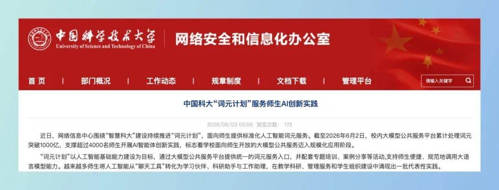

小智
AI 资讯站。只报真事，不制造焦虑。
长按识别二维码 · 关注不迷路
D · 教育观察
有人每天领 1 亿 Token，有人全校免费用满血 DeepSeek——报志愿的新指标出现了。
以后选大学，除了比宿舍、比保研率，可能还得问一句：你们学校发多少 Token？
2026 年，“发 Token”成了高校新动作：至少 7 所高校官方宣布向学生免费发放 AI 额度——最“大方”的中国科学技术大学给每人每天 1 亿 Token，按市场价折算相当于学校每天为每个学生花数十元 AI 开销；重庆大学则走另一条路：全校免费部署满血 DeepSeek，并把 AI 智能体写进必修课。明年填志愿，家长可能要多问一句：你们学校发多少 Token？
按公开信息（学校官网、官方公众号、权威媒体），截至 11 月初：
• 中国科学技术大学：“词元计划”（5 月启动），全校师生每人每天 1 亿 Token、每日重置，可调 DeepSeek、GLM、千问等主流模型，支持 API 开发；招生宣传已写明 2026 级新生同享。9 月初数据：1.2 万名师生在用，日均处理超 300 亿 Token，累计超 1.4 万亿。
• 同济大学：10 月 26 日上线人工智能服务平台，每个师生账号每周 1000 积分，最高折合 1 亿 Token；其 AI 平台 2024 年 9 月就上线，注册师生已超 2.4 万、师生自建智能体 1.1 万多个。
• 清华大学：“算力券 2.0”（9 月，与并行科技合作）：师生完成身份认证即可领 1000 元基础算力券，可抵 Token 调用、GPU 租用、容器云和模型推理；未来三年企业提供总计 3000 万元支持。
• 北京大学：10 月 22 日宣布与阿里云合作，师生免费一年 Qoder 编程智能体，每月 3000 Credits、可申请追加；名额有限，还设了闲置回收——当月用量不足获赠额三分之一可能被收回。
• 北京邮电大学：“人人有算力”平台（9 月），为近万名本科和研究生新生开通免费 AI 算力账户——不发 Token 而是给一台“专属虚拟服务器”，10 余种大模型已部署好，年内向全校开放。
• 湖南大学：超算中心 4 月 30 日起向全校免费开放大模型 API，每人每天 200 万 Token；已服务 2000 余名师生、免费发出超 62 亿 Token。
• 武汉大学：3 月“百人龙虾计划”，免费发 100 份高性能算力 API 供学生体验开源智能体 OpenClaw——不到两小时抢完，文科院学生也在申请。
另有区域版：福建移动面向全省 90 所高校规划约 2500 亿 Token 免费额度（随大学生 AI 创意大赛分发，覆盖率已 55.6%）。

— 中国科大网络信息化办公室官网“词元计划”页面（图源：官网截图）
在重大读书的同学，你们的学校走的是另一条路——不比 Token 数字，比“成体系”：
• 全校免费满血 DeepSeek：2025 年 2 月起与重庆移动共建，DeepSeek-R1 满血版本地部署（昇腾 910B），师生校园网免费用、不限次，还接入了 AI 辅导员“润欣”；
• 全国率先把 AI 智能体写进必修课：10 月 9 日与腾讯合作，把 WorkBuddy 纳入全校 AI 通识必修课——6700 余名 2026 级本科新生全修、超半数学时是实践；
• 配套拉满：WorkBuddy 开学季积分福利、校园专属 Buddy、校园 AI 工作台，还有与实验考核打通的 AI 智能体创新挑战赛（新生赛道 + 在校生赛道）；
• 经管学院还试点了天翼云“企业 MaaS 平台”，聚合 DeepSeek、智谱、千问、豆包，全院师生可试用。一句话：额度 + 课程 + 竞赛，学校是真打算教你怎么用。
— 重庆大学校园：腾讯 WorkBuddy 校园开放日（图源：重庆日报）
先说结论：聊天根本用不完，干活才烧得动。
• 只是问作业、写总结，1 亿 Token 每天都用不掉；
• 但做 AI 开发（AI Coding）极烧：反复读代码、改文件、跑测试、调智能体，一个校园助手项目从原型到调试可能就要消耗数千万 Token；
• 最有意思的溢出效应：非计算机专业也敢动手了——学法律的做文献检索助手、学医的做知识库、学设计的做自己的小产品。
给明年考生和家长五条实在建议：
1. 把它当“信号弹”，不当“决定项”。肯发 Token 说明学校把 AI 当基础设施投——这是加分项，但专业实力、师资、保研出路永远是第一位，别为福利降志愿。
2. 看“发放面”，不只看数字。全校每天发（中科大、湖南大学）＞ 新生开账户（北邮）＞ 学院试用（重大经管学院）＞ 百人试点（武大）。面越广，说明是制度不是宣传。
3. 看规则是否成熟。北大设闲置回收、北邮要求“如实说明 AI 使用情况”——有规则说明学校是真在管，不是撒钱博眼球。
4. 看“配套”比看“额度”更准。额度是发了，有没有人教你怎么用？重庆大学把智能体写进必修课、办竞赛、建校园 AI 工作台；中科大办算力与智能体开发大赛（600 多人参赛、消耗超 3400 亿 Token）——“额度 + 课程 + 竞赛”闭环的学校，学生才真的用得起来。
5. 没发 Token 的学校不等于不投入。上海交大“致远一号”（全国高校最大国产智算平台）、东南大学全国首个纯国产化校级智算中心、西安交大 50P 算力集群开放共享——算力平台同样是“新基建”，只是还没折算成 Token 发到你手里。
各家 Token、积分、算力券不是统一计价——同样 1 亿 Token，调不同模型成本差很多，不能直接比谁“大方”。另外新京报社论点出了真问题：不是所有高校都发得起，名校在填补 Token 鸿沟，普通高校学生怎么办，是比“谁发得多”更值得关注的公平问题。
家里有高三孩子的，把这份名单转给他/她；孩子已在读大学的，去学校信息中心官网搜一下“算力券”“大模型 API”“AI 平台”——很多学校的额度一直在那里，只是你没领。在重庆大学读书的：用统一身份认证登录“智慧学工”找 AI 辅导员“润欣”问 DeepSeek，AI 通识课的实践环节认真做——那门课的竞赛和实验考核是打通的。
事实依据
2026 年至少 7 所高校发 AI 额度：中科大每人每天 1 亿 Token（每日重置）；同济每周 1000 积分最高折 1 亿；清华算力券 1000 元；北大 Qoder 每月 3000 Credits；北邮近万新生免费算力账户；湖南大学每天 200 万 Token（已发 62 亿）；武大 100 份算力 API 秒光；福建移动 90 所高校 2500 亿 Token。重庆大学 2025/2 起全校免费满血 DeepSeek，10 月率先把 WorkBuddy 写进 AI 必修课（6700 余新生）。据央广网、新京报、凤凰网、湖大官网、重庆日报、澎湃（2025.2—2026.11）。
核查时间：2026 年 11 月 4 日。
TAKEAWAY
Token 正在变成图书馆一样的校园基础设施。
对考生它是一个新维度的参考——但记住三看：看发放面、看规则、看背后的算力家底；对打工人它是提醒：两三年后走进职场的大学生，是天天用 AI 干活长大的一代。
小智
AI 资讯站。只报真事，不制造焦虑。
长按识别二维码 · 关注不迷路
小智：选学校，也选它的算力家底。